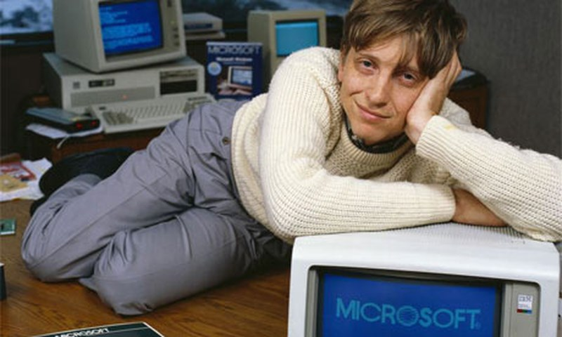

William Henry Gates III (28 de octubre de 1955, Seattle, Washington) es un empresario estadounidense, cofundador de la empresa de software Microsoft, productora de Windows, el sistema operativo para computadoras personales m�s utilizado en el mundo. Est� casado con Melinda French, y ambos ostentan el liderazgo de la Fundaci�n Bill y Melinda Gates, dedicada a reequilibrar oportunidades en salud y educaci�n a nivel global, especialmente en las regiones menos favorecidas, raz�n por la cual han sido recientemente galardonados con el Premio Pr�ncipe de Asturias de Cooperaci�n Internacional 2006. Curs� estudios en la escuela privada y de alta sociedad de Lakeside, en Seattle. Esta escuela ten�a ya una computadora en el a�o 1968. As� Gates tuvo la posibilidad de contactar pronto con la m�quina y tomarle el gusto a la inform�tica. No tard� mucho en aprender y s�lo necesit� una semana para superar a su profesor. Tambi�n en Lakeside, Gates conoci� a Paul Allen, con quien m�s tarde fundar�a Microsoft. Cre� la empresa de software Microsoft el 4 de abril de 1975, siendo a�n alumno en la Universidad de Harvard. En 1976, abandon� la universidad y se traslad� a Albuquerque, sede de Altair, para pactar con esa empresa la cesi�n de un lenguaje para computadoras, el Basic, al 50% de las ventas. Al a�o siguiente, se enter� del �xito de la empresa Apple y de que necesitan un int�rprete de Basic. Intent� presentar su versi�n a Apple, pero ni siquiera fue recibido. En 1980, como Presidente de Microsoft y con ayuda de su madre, que era miembro de la junta de directores, se reuni� con altos ejecutivos de IBM en Seattle. Consigui� venderles el sistema operativo DOS, aunque �l a�n no lo ten�a y luego lo compr� a muy bajo precio a un joven programador. IBM necesitaba ese sistema operativo para competir con Apple, raz�n por la cual la negociaci�n era flexible. Microsoft quiso los derechos de licencia, mantenimiento, e incluso la facultad de vender el DOS a otras compa��as. IBM cometi� el error m�s grande de su historia y acept�, considerando que lo que producir�a dividendos ser�a el hardware y no el software. Unos d�as despu�s, Microsoft compr� los derechos de autor del QDOS a Tim Paterson que trabajaba para la Seattle Computer Products, por $50,000 d�lares, que entreg� a IBM sin cambiar nada salvo el nombre a MS-DOS (Microsoft DOS) Consciente de la importancia del entorno gr�fico que hab�a mostrado Apple en su ordenador Lisa, se propuso conseguir tambi�n el entorno gr�fico y el "rat�n" para operarlo. Mientras, Steve Jobs, fundador de Apple, inici� el desarrollo del Macintosh, Bill Gates visit� Apple. Ofrec�a mejorar sus hojas de c�lculo y otros programas. Amenazaba con vender su material inform�tico a IBM, con lo que obtuvo una alianza Apple-Microsoft. Microsoft se hizo con la tecnolog�a de entorno gr�fico y con el rat�n, y sac� al mercado Microsoft Windows, como directo competidor de Macintosh. Al finalizar el segundo milenio, el sistema operativo Microsoft Windows (en todas sus versiones), se utilizaba en la mayor parte de ordenadores personales del planeta. Bill Gates encabeza la lista anual de las mayores fortunas personales realizada por la revista Forbes, con bienes calculados alrededor de los $51,000 millones de d�lares americanos (2005). En 1994, adquiri� un manuscrito de Leonardo da Vinci por 25 millones de d�lares. La empresa se ha visto envuelta en diversos procesos judiciales acusada de pr�cticas monopol�sticas, lleg�ndose a especular incluso con la posibilidad de que los tribunales estadounidenses exigieran dividir la empresa, como ya sucediera con otras empresas estadounidenses en el pasado. Las acusaciones se relacionan con la vinculaci�n de diversos programas a su sistema operativo, el m�s extendido, lo que es considerado por sus competidores un abuso de posici�n dominante para diversificar sus productos, como es el caso del navegador Internet Explorer, el reproductor de archivos multimedia, Windows Media Player, o el sistema de mensajer�a instant�nea MSN Messenger incluido en el sistema operativo Windows. El 16 de junio de 2006 hizo p�blica su intenci�n de, en julio de 2008, abandonar sus labores diarias al frente de Microsoft para dedicarse por entero a la fundaci�n. La transici�n de responsabilidades ser� progresiva para evitar afecciones negativas en el desarrollo diario de la empresa, continuando como Presidente de Honor de la misma.

Art�culo principal: Fundaci�n Bill y Melinda Gates El 16 de junio de 2006 hizo p�blica su intenci�n de abandonar sus labores diarias al frente de Microsoft hacia el 2008 para dedicarse por completo a su fundaci�n.13?14? La transici�n de responsabilidades fue progresiva para evitar afectar el desarrollo diario de la empresa, continuando como Presidente Honorario de la misma. El 27 de junio de 2008 abandon� sus labores al frente de Microsoft cediendo el control de la empresa a Steve Ballmer. Bill Gates dedica un 70 % de su tiempo a la Fundaci�n Bill y Melinda Gates y el otro 30 % a la empresa
En 1985 Gates fue nombrado uno de los �50 solteros m�s codiciados� por Good Housekeeping. Est� casado con Melinda French desde el 1 de enero de 1994 y tienen tres hijos: Jennifer Katharine (n. 1996), Phoebe Adele (n. 2002) y Rory John (n. 1999). La familia reside en su casa en la ladera de una colina con vistas al lago Washington, en Medina. En marzo de 2014, en una entrevista de la revista Rolling Stone, Gates se�al� que, en cuanto a su fe, �los sistemas morales de la religi�n, creo, son super importantes. Hemos criado a nuestros hijos de una manera religiosa�. En la misma entrevista, Gates dijo: �Creo que tiene sentido creer en Dios, pero exactamente qu� decisi�n en tu vida haces de manera diferente a causa de ello, no lo s�.16? En otra entrevista a principios de 2014, Gates afirm� que si el cielo existiera �l estar�a �gratamente sorprendido�.17? Seg�n otras fuentes, Gates (que naci� en el seno de una iglesia protestante), es ahora fuertemente agn�stico18? Bill Gates es vegano.19? Desde 2008, a�o en que dej� de dirigir Microsoft, ha participado en algunos proyectos para poder difundir este estilo de vida. En este sentido, junto a Peter Thiel (cofundador de la empresa PayPal), ha respaldado la creaci�n de huevos artificiales a base de plantas f�ciles de cultivar.20? Tambi�n asegur�, en una ocasi�n previa, que �el futuro de la carne es vegano�, lo cual va en sinton�a con una propuesta que hab�a hecho para crear semillas transg�nicas que tuviesen sabor a carne.21?22?23? Desde 2007 Bill Gates ocupaba el segundo lugar en la lista anual de las mayores fortunas personales realizada por la revista Forbes, detr�s del empresario mexicano Carlos Slim, pero debido a fluctuaciones en el patrimonio de estos dos magnates, sus fortunas quedaron en 72 700 y 72 100 millones de d�lares respectivamente, seg�n el Bloomberg Billionaires Index de mayo de 2013. En 1994, adquiri� un manuscrito de Leonardo da Vinci por 30 millones de d�lares.El talento de Gates se ha reflejado en m�ltiples programas inform�ticos, cuyo uso se ha difundido por todo el mundo como lenguajes b�sicos de los ordenadores personales; pero tambi�n en el �xito de una empresa flexible y competitiva, gestionada con criterios heterodoxos y con una atenci�n especial a la selecci�n y motivaci�n del personal. Las innovaciones de Gates contribuyeron a la r�pida difusi�n del uso de la inform�tica personal, produciendo una innovaci�n t�cnica trascendental en las formas de producir, transmitir y consumir la informaci�n. El presidente George Bush reconoci� la importancia de la obra de Gates otorg�ndole la Medalla Nacional de Tecnolog�a en 1992.